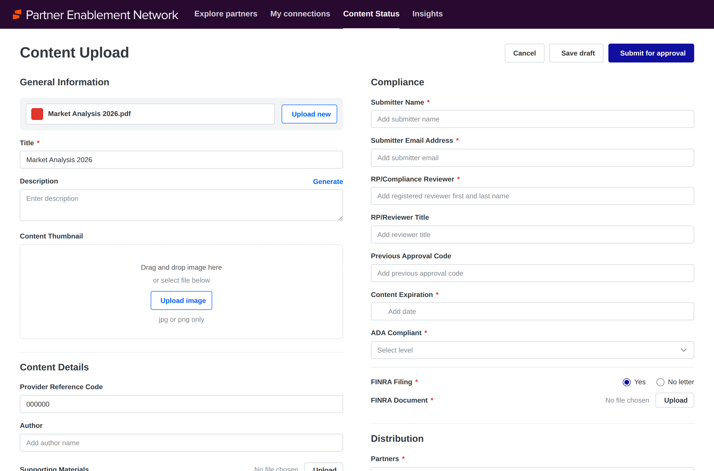
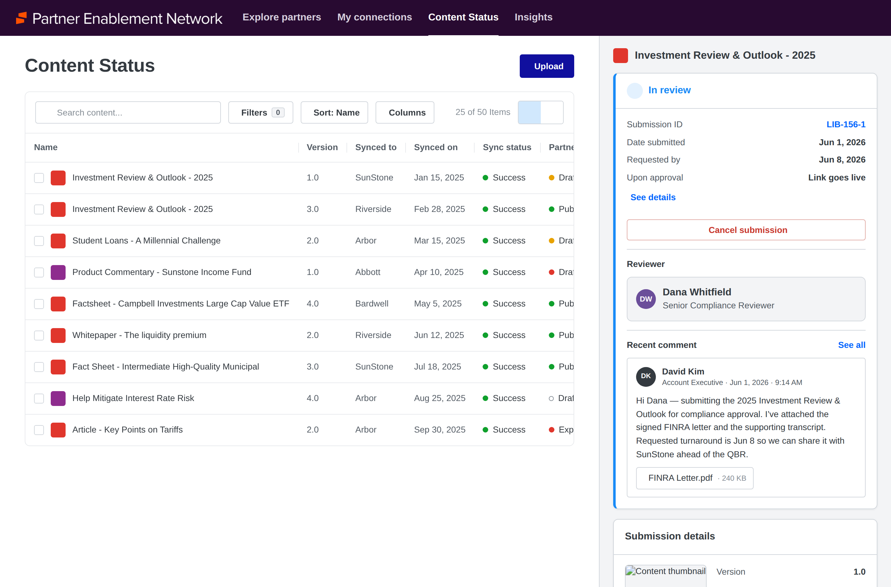

A network play, not a feature
A structural problem no single product could solve
Asset managers, wealth firms, insurers, retirement providers, banks and fintechs all depend on each other. Asset managers produce the market commentary, investment strategies and client-ready material that advisors rely on. Wealth firms decide what their advisors are permitted to use. Both sides need that exchange to be compliant, auditable and fast — and today it happens through incumbent third-party tools, email, and manual approval chains that neither side can measure.
The design problem was harder than a normal product problem for one reason: there is no single user. A content marketer at an asset management firm and a financial advisor at a wealth firm have opposite incentives. One wants maximum reach for their material. The other is drowning in it. Designing for either one alone would have broken the network for the other.
There was a third constraint that shaped everything: roughly half of the partner firms in the target ecosystem were not platform customers at all. If participation required buying the full platform, the network would never reach the density that makes a network valuable.

Compliance metadata is captured at the moment of contribution — registered reviewer, prior approval code, expiration, accessibility level, regulatory filing evidence — so it travels with the content instead of being reconstructed at every firm it reaches.
Owning the strategy, not just the screens
I set the design strategy for Partner Enablement Network alongside my product and engineering counterparts, and led the design of the end-to-end experience myself. That meant working at two altitudes at once: shaping what the product needed to become for the business case to hold, and then designing the ten flows that would actually deliver it.
I also helped build the go-to-market strategy deck that secured investment in the initiative. That mattered more than it sounds. Design was in the room where the commercial model, the phasing, and the target segments were decided — which meant the experience and the business strategy were shaped against each other rather than handed down in sequence.
The clearest example: the requirement for a submission portal that lets non-customer firms participate in the network without buying the platform did not come out of a feature backlog. It came from recognizing that network density was the entire value proposition, and that our onboarding experience was the thing standing in its way.
Designing both sides of a two-sided network
I structured the work around the two participants rather than around screens. Every flow had to answer a question for the source firm distributing content, the target firm governing it, or the advisor consuming it — and no flow could be optimized for one at the expense of another.
Making AI useful without making it unaccountable
The most difficult surface was content selection. An advisor preparing for a client meeting needs the right slides — but "right" depends on the client's holdings, their risk tolerance, the advisor's own preferences, which asset managers are actually in that portfolio, and what the firm's compliance team has approved for use. That is a large amount of context to resolve, and resolving it badly in a regulated environment is not a usability problem, it is a liability.
The design principle I set for the team was that AI proposes and the human disposes. The system does the work of narrowing a vast partner catalog down to what is relevant and approved, and it shows why it made those choices — but the advisor stays the decision-maker, and every recommendation stays inside the compliance boundary the firm defined. Relevance and governance had to be one system, not a feature layered over a filter.

One content item does not have one status. It has a status per partner firm — version 1.0 in review at one, version 3.0 published at another, each carrying its own approval code.
Reusing the platform's compliance model instead of inventing another
A network that moves regulated content between firms needs approval built into it. The tempting path was to build PEN its own approval flow, since its situation looks special: content crosses company boundaries, and the same document can be approved at one firm and rejected at another.
We did the opposite. PEN submits into the same governance service the rest of the platform uses. A partner submission gets a submission ID, a reviewer, an activity trail, and a state — the identical model behind approvals everywhere else. What PEN adds is only what is genuinely different: the cross-tenant relationship, and the fact that status is per partner rather than global.
That decision is easy to describe and was not easy to hold. It meant PEN's timeline took a dependency on a platform service, and it meant negotiating rather than building around it. But an approval flow that only PEN understood would have become a second compliance model to maintain, and a reviewer would have had to learn two systems to do one job.

The submission detail inside PEN — same submission object, same reviewer model, same activity trail as every other approval on the platform.
An approval has to survive leaving the building
Inside one company, an approval can be a status on a record. Across companies it has to be evidence. If a regulator asks a wealth firm why its advisors were distributing a particular piece of partner material, "our system said it was approved" is not an answer. The firm needs to show who approved it, when, on what version, against what supporting documentation, and what was said in the process.
That reframed a set of features that would otherwise look like small additions. Approval notes had to be visible to both the submitting and reviewing firm, not just internally. Regulatory filing letters attached at submission had to be retained, not just uploaded. Reviewer markups returned as attachments on threaded replies had to be retained too. Every approved item needed a system-generated approval code appended to it and surfaced on both sides. And the conversation itself — threaded, spanning two tenants — became a record subject to retention rather than a chat feature.
Designing threaded discussion across a company boundary was the subtlest part. Two organizations need to talk about a document without either one leaking internal context to the other, while producing a single auditable thread both can point to later. Getting the boundary between shared and internal right mattered more than any of the interface decisions around it.
From early access toward general availability
Content approvals are in early access and working toward general availability, with the requirements set by the anchor wirehouse deployment. The end-to-end experience is designed across both sides of the network, and the approval surfaces that were built on the older workflow are being rebuilt on the shared governance service rather than patched.
The architecture was deliberately scoped to extend past documents. Lessons, social posts, and program tasks are all content types a partner firm will eventually want to distribute under the same governance, and the model was designed so adding them is a new content type rather than a new approval system.
Design earns its seat by shaping the bet
The lesson I keep from this one is about where design belongs. The most valuable contribution I made was not a screen — it was arguing, early and with evidence, that the network only works if the firms outside our customer base can participate. That reframed the product and the commercial model together.
It is also the clearest case I have for designing systems rather than surfaces. Ten flows, two opposed sets of incentives, and a regulatory constraint that could not bend. Getting that to cohere is the part of the work I want more of.